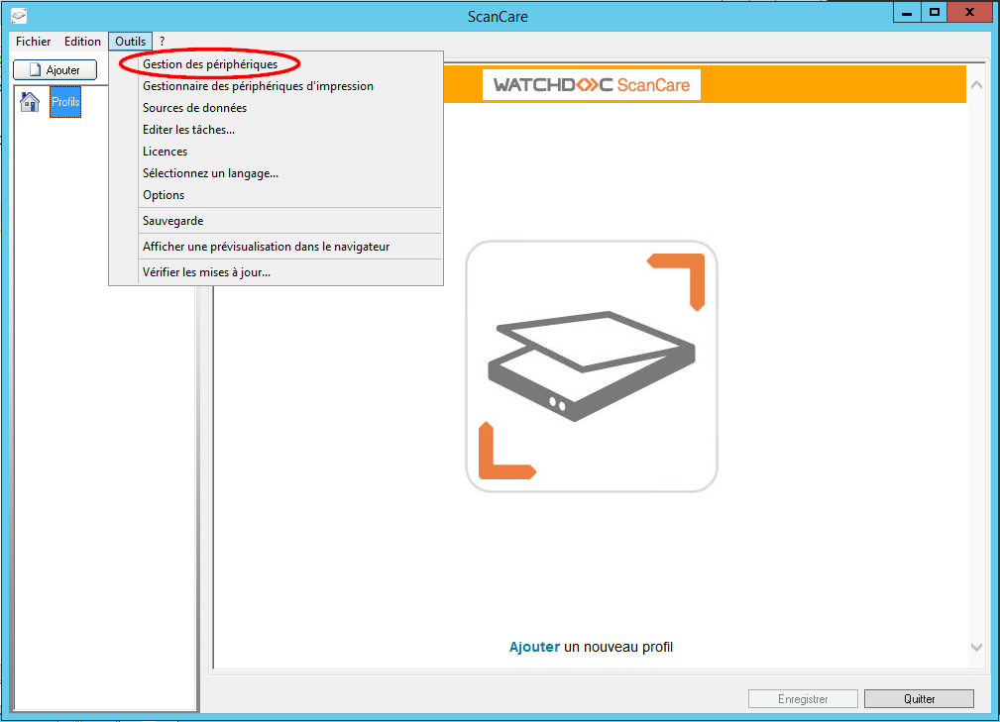
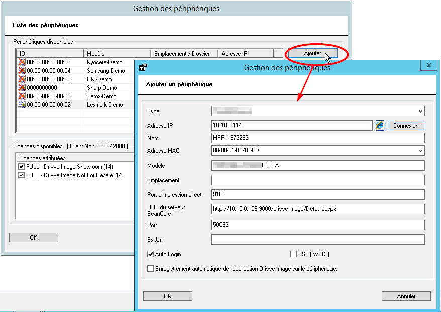
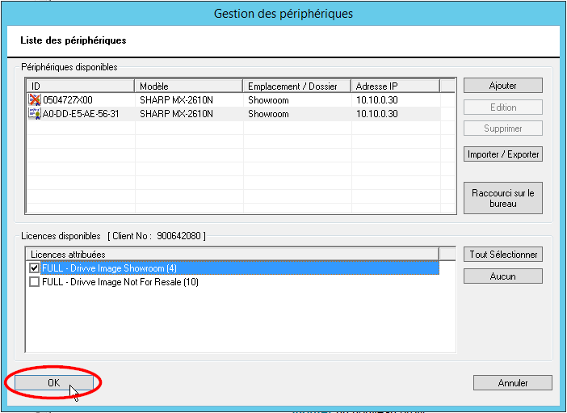

Watchdoc ScanCare - Configurer un périphérique
Préalable
Pour utiliser Watchdoc ScanCare sur un périphérique d'impression, il est nécessaire de configurer ce périphérique et de lui associer une licence.
Accéder à l'interface de configuration
Pour accéder l'interface de configuration des périphériques :
-
depuis le bureau du serveur, cliquez sur le raccourci
 ScanCare créé automatiquement lors de l'installation ;
ScanCare créé automatiquement lors de l'installation ; -
dans l'interface d'administration Watchdoc ScanCare, cliquez sur Outils > Gestion des périphériques :

è Vous accédez à l'interface Gestion des périphériques composée de 2 sections :
-
Périphériques disponibles : liste des périphériques configurés sur le serveur et disponibles pour être utilisés par ScanCare. Dans cette liste :
-
le logo indique les périphériques auxquels ne sont associés aucune licence ;
-
le logo indique les périphériques auxquels sont associés des licences.
-
-
Licences disponibles : liste des licences acquises qu'il est possible d'associer aux périphériques d'impression. Les licences sont présentées par types et le nombre de licences restantes est affiché entre parenthèses.
Cette interface est dotée des boutons suivants :
-
pour les périphériques :
-
Ajouter : permet d'ajouter un périphérique dans la liste ;
-
Editer : permet d'éditer les paramètres d'un périphérique sélectionné dans la liste ;
-
Supprimer : permet de supprimer un périphérique de la liste ;
-
Importer/exporter : permet de procéder à l'ajout en masse de périphériques par import d'un fichier .csv ou de procéder à l'export des périphériques de la liste pour y installer l'application Watchdoc ScanCare® en masse ;
-
Raccourci sur le bureau : permet de créer, sur le bureau, un raccourci d'accès à la configuration du périphérique de la liste.
-
-
pour les licences :
-
Tout sélectionner : permet de sélectionner toutes les licences ;
-
Aucun : permet de déselectionner toutes les licences sélectionnées.
-
Ajouter un périphérique
Pour ajouter un périphérique dans la liste des périphériques disponibles :
-
dans la liste Périphériques disponibles, cliquez sur le bouton Ajouter :
-
dans l'interface affichée, remplissez les champs suivants :
-
Type : dans la liste, sélectionnez le type du périphérique que vous souhaitez ajouter ;
-
Adresse IP : saisissez l'adresse IP du périphérique que vous souhaitez ajouter, puis cliquez sur le bouton Connexion.
è L'outil récupère automatiquement les propriétés du périphérique et remplit les champs Nom, Adresse MAC, Modèle, Emplacement, Port d'impression direct, URL du serveur ScanCare et Port. Si des informations sont manquantes, complétez les champs du formulaire manuellement.
N.B. : si l'application Watchdoc ScanCare n'a pas trouvé automatiquement les informations relatives au périphérique, il se peut que ce périphérique n'arrive pas à se connecter à l'application, même après saisie manuelle des informations.
-
Exit URL : (pour périphériques OKI® et Toshiba®), ce champ permet de saisir l'URL de l'application qui doit s'ouvrir lorsque l'utilisateur ferme Watchdoc ScanCare depuis le périphérique.
-
AutoLogin : (pour périphériques OKI® et Toshiba®) cochez cette case dans le cas où un système de SSO (Single Sign-on) est configuré, de sorte que l'authentification requise soit celle du compte LDAP de l'utilisateur. Ainsi, l'utilisateur n'a pas à s'authentifier une seconde fois pour accéder à Watchdoc ScanCare dès lors qu'il s'est authentifié pour accéder au périphérique.
-
SSL (WSD) :(pour périphériques OKI® et Toshiba®) cochez la case pour activer le protocole SSL.
N.B. : pour activer le protocole SSL depuis Watchdoc ScanCare, il est nécecssaire que ce paramètre soit également activé sur le périphérique.
-
Afficher les tâches de numérisation en deux colonnes (Kyocera®) : cochez cette case pour optimiser l'affichage des données sur l'écran du périphérique ;
-
Enregistrement automatique de l'application sur le périphérique : cochez cette case pour activer l'application Watchdoc ScanCare sur le périphérique. Complétez le paramétrage en précisant
-
Application : cochez la case pour attribuer un nom à l'application. Ce nom, affiché sur l'écran du périphérique, est celui qui est saisi dans la zone de saisie suivante. C'est ce nom qui s'affiche .
-
Utilisateur : saisissez dans ce champ le nom de l'utilisateur habilité à installer l'application Watchdoc ScanCare sur le périphérique ;
-
Mot de passe : si nécessaire, saisissez dans ce champ le mot de passe de l'utilisateur habilité à installer l'application Watchdoc ScanCare sur le périphérique.
N.B. : la nature et le nombre de champs du formulaire varient en fonction de la marque et du modèle du périphérique.
Si l'application Watchdoc ScanCare ne peut être installée sur le périphérique, un message d'information correspondant est affiché.
-
-
cliquez sur le bouton OK pour enregistrer l'ajout du périphérique.
è Le périphérique est ajouté à l'application :

è Au terme de cette opération, le périphérique est prêt à fonctionner avec Watchdoc ScanCare, sous réserve de disposer d'une licence. L'opération suivante est donc d'associer une licence au périphérique.
Associer la licence à un périphérique
-
Dans la liste des périphériques, celui que vous venez d'ajouté est sélectionné (surligné en gris, précédé du logo puisqu'aucune licence ne lui est encore associée ;
-
sélectionnez l'une des licences figurant dans la liste des licences disponibles
è dès qu'une licence est associée, elle est décomptée du nombre de licences disponibles (chiffre figurant entre parenthèses) et le périphérique est précédé du logo suivant : .
-
Cliquez sur le bouton OK pour valider l'association du périphérique et de la licence :
